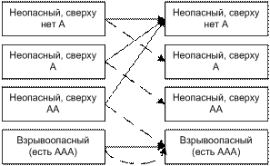
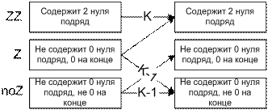

Динамическое программирование: простейшие задачи
Числа Фибоначчи
Вычислить $N$-ое число в последовательности Фибоначчи, — 1, 1, 2, 3, 5, 8, … — в которой первые два члена равны
единице,
а все остальные представляют собой сумму двух предыдущих.
Входные данные:
Одно число $1 \le N \le 70$.
Выходные данные:
Одно число — $N$-ый член последовательности.
Решение: Выпишем условие задачи в виде формул: $F_1=1$, $F_2=2$, $F_i=F_{i-1}+F_{i-2}, i \ge 3$.
const MaxN = 70;
var i,N : Integer;
F : Array [1..MaxN] of Int64; { Массив для хранения вычисленных значений F }
begin
{ Чтение входных данных }
Read(N);
{ Проверка корректности входных данных }
assert( (1 <= N) and (N <= MaxN) );
{ Инициализация "динамики", первые 2 значения F }
F[1]:=1; F[2]:=1;
{ Общий шаг динамики: в цикле вычисляем значения F }
for i:=3 to N do
F[i] := F[i-1] + F[i-2];
{ Вывод результата }
write(F[N]);
end.
Мячик на лесенке
На вершине лесенки, содержащей $N$ ступенек, находится мячик, который начинает прыгать по ним вниз, к основанию.
Мячик может прыгнуть на следующую ступеньку, на ступеньку через одну или через 2. (То есть, если мячик лежит на 8-ой
ступеньке, то он может переместиться на 5-ую, 6-ую или 7-ую.).
Определить число всевозможных "маршрутов" мячика с вершины на землю.
Входные данные:
Одно число $1 \le N \le 40$.
Выходные данные:
Одно число — количество маршрутов.
| Входной файл | Выходной файл |
|---|---|
| 4 | 7 |
| 39 | 12960201916 |
| 13 | 1705 |
Решение:
$D_i$ - количество всевозможных способов попасть на $i$-ую ступеньку.
$D_1=1$ - только один способ попасть на первую ступеньку.
$D_2=2$ - попасть на 2-ую можно 2-мя способами: прыгнув на неё сразу или прыгнув с 1-ой ступеньки.
$D_3=4$ - попасть на 3-ую можно 4-мя способами:
1) прыгнув на неё сразу
2) прыгнув на 1-ую, потом на 3-ю
3) прыгнув на 2-ую, потом на 3-ю
3) прыгнув на 1-ую ступеньку, потом на 2-ую, потом на 3-ю.
$D_i=D_{i-1}+D_{i-2}+D_{i-3}, i \ge 4$ - на ступеньки начиная с 4-ой можно попасть с 3-х предыдущих.
Мы знаем, сколькими способами можно попасть на каждую ступеньку из предыдущих.
Общий принцип: Количество вариантов как попасть в какое-то состояние равно сумме количеств вариантов как
попасть в
предыдущие состояния.
Var I,N : Integer;
D : Array [1..40] of Int64;
Begin
Read(N);
D[1]:=1; D[2]:=2; D[3]:=4;
For I:=4 to N do
D[I] := D[I-1] + D[I-2] + D[I-3];
Writeln(D[N])
End.
Черепашка
На квадратной доске расставлены целые неотрицательные числа. Черепашка, находящаяся в левом верхнем углу, мечтает
попасть в правый нижний. При этом она может переползать только в клетку справа или снизу и хочет, чтобы сумма всех
чисел, оказавшихся у нее на пути, была бы максимальной. Определить эту сумму.
Входные данные:
Первая строка — N — размер доски (1≤N≤50).
Далее следует N строк, каждая из которых содержит N целых чисел, представляющие доску (0≤Aij≤104).
Выходные данные:
Одно число — максимальная сумма.
d.in |
d.out |
3 |
16 |
Решение:
 - максимальная
набранная
сумма, если черепашка находится в клетке
- максимальная
набранная
сумма, если черепашка находится в клетке 

Робот
В исследовательской лаборатории фирмы Robots&Co разработали новую модель робота. Главной особенностью данной
модели робота является то, что он работает по заранее заданной программе, в которой могут присутствовать команды:
сделать шаг на Юг, на Север, на Восток или на Запад. Робот исполняет программу строго последовательно и, дойдя до
конца программы, останавливается. Специалисты из Robots&Co заинтересовались вопросом, сколько существует
различных
программ, состоящих из K инструкций, таких, что робот, выйдя из начала координат, придет в точку с координатами (X,
Y). Оси координат располагаются параллельно сторонам света, и единица измерения, соответствует одному шагу робота.
Напишите программу, которая дает ответ на этот вопрос.
Входные данные:
Во входном файле находятся три числа K, X и Y (0£K£16, |X|, |Y|£16), разделенные пробелами.
Выходные данные:
В выходной файл ваша программа должна поместить одно число — количество программ для робота.
e.in |
e.out |
5 -2 -3 |
10 |
16 16 15 |
0 |
16 3 3 |
56216160 |
Решение:
- количество программ
для
робота состоящих из K инструкций, таких, что робот, выйдя из начала координат, придет в точку с координатами (X,
Y)

Взрывоопасность
При переработке радиоактивных материалов образуются отходы двух видов — особо опасные (тип A) и неопасные (тип B).
Для
их хранения используются одинаковые контейнеры. После помещения отходов в контейнеры, последние укладываются
вертикальной стопкой. Стопка считается взрывоопасной, если в ней подряд идет более двух контейнеров типа A. Для
заданного количества контейнеров N определить число безопасных стопок.
Входные данные:
Одно число 1£N£30.
Выходные данные:
Одно число — количество безопасных вариантов формирования стопки.
f.in |
f.out |
5 |
8 |
Решение:
 |
|

К-ичные числа
Требуется вычислить количество N-значных чисел в системе счисления с основанием K, таких, что их запись не содержит
двух подряд идущих нулей. (2£K£10, N + K£18).
Входные данные:
Числа N и K в десятичной записи, разделенные пробелом или переводом строки.
Выходные данные:
Искомое число в десятичной записи.
g.in |
g.out |
4 3 |
44 |
5 2 |
8 |
Решение:

Для будет:
Динамический переход:

Паровозики
N локомотивов, имеющих номера от 1 до N и установленных на железнодорожную колею, начинают двигаться в одну сторону,
причем локомотив номер k изначально движется со скоростью k км/ч. Если локомотив, движущийся с большей скоростью,
нагоняет более медленный локомотив, дальше они движутся один за другим со скоростью впереди идущего локомотива.
Очевидно, через некоторое время после начала движения локомотивы разобьются на несколько групп, движущихся с разной
скоростью.
Написать программу, определяющую, сколько начальных расстановок s из N! возможных дадут в результате p групп
движущихся локомотивов.
Входные данные:
Два числа — 1£N£16 и 1£p£N.
Выходные данные:
Одно число — s.
h.in |
h.out |
4 2 |
11 |
5 4 |
10 |
6 6 |
1 |
uses SysUtils;
const Nmax=16;
var
Save : array [1..nmax,1..nmax,1..nmax] of Int64;
function F( i,n,p:byte; x:integer ):Int64;
{ i-ый паровоз впереди,
n паровозов всего
p групп }
var j:byte;
begin
if Save[i,n,p]=-1 then begin
if x=0 then writeln( Format('F(i=%d,n=%d,p=%d)=',[i,n,p] ) );
Result := 0;
{ Рассмотрим, как может i-ый паровозик оказаться впереди }
{ При этом есть 2 варианта: }
{ 1. Он уйдёт вперёд и образует новую группу }
{ Т.е. он быстрее предыдущего паровозика }
{ Пусть предыдущий едет со скоростью j }
{ Мы могли получить это из ситуации:
j in [1..i-1]
n-1 паровоз всего;
p-1 группа всего;
т.е. новый паровоз образовал новую группу }
for j:=1 to i-1 do begin
Result := Result + F(j,n-1,p-1,x+1);
if x = 0 then writeln( Format(' + F(i=%d,n=%d,p=%d)=%d',[j,n-1,p-1,F(j,n-1,p-1,x+1)] ) );
end;
{ i-ый не образует новую группу, т.е. j>i }
for j:=i+1 to n do begin
Result := Result + F(i,n-1,p,x+1);
if x = 0 then writeln( Format(' + F(i=%d,n=%d,p=%d)=%d *',[i,n-1,p,F(i,n-1,p,x+1)] ) );
end;
Save[i,n,p] := Result;
end;
F:=Save[i,n,p];
if (i>n) or (p>n) then
assert( Result = 0 );
end;
var i,j,NN,PP,n,p:byte;
s:Int64;
begin
readln(NN,PP);
for i:=1 to NN do
for n:=1 to NN do
for p:=1 to NN do begin
Save[i,n,p]:=-1;
if (i>n) or (p>n) then Save[i,n,p]:=0;
{ Одна группа - и не первый впереди - не может быть :) }
if (p=1) and (i<>1) then Save[i,n,p]:=0;
{ Кол-во групп = кол-ву паровозов и первый - самый быстрый }
if (n=p) and (i=n) then Save[i,n,p]:=1;
end;
for i:=1 to NN do
for n:=1 to NN do
for p:=1 to NN do begin
if (n=p) and (i<n) then assert( F(i,n,p,1) = 0 );
if i>n then assert( F(i,n,p,1) = 0,
Format('F(%d,%d,%d)=%d',[i,n,p,F(i,n,p,1)]) );
end;
s:=0;
for i:=1 to NN do
s:=s+F(i,NN,PP,1);
writeln(s);
end.